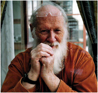

CURRICULUM VITAE
(Mars 2007)

B O D V A R S C H J E L D E R U P
Født: 1932, Eide på Nordmøre, Norge
Arkitekturdiplom 1959, NTH (NTNU), Trondheim
P r a k s i s :
Architetur (ansatt og/eller egen praksis: Helsinki, Stavanger, Trondheim;
12 år)
Byplan (Stavanger; 10 år)
Arkitekturlærer (NTH (NTNU), Trondheim; 18 år)
Internasjonale kurs: ’Et sted for stillhet’, I samarbeid
med studenter og kolleger, 1989-1994
publikasjoner og utstillinger (se nedenfor)
F o r s k n i n g :
Universitetsstipend: en studie I sakralarkitektur (2 år)
Symbologi, metrologi, pyramidologi etc (de siste 25 årene)
publikasjoner og utstillinger (se nedenfor)
P u b l i k a s j o n e r :
(klikk på ¤ for nærbilde; (N)
= norsk; (E) = engelsk; ++ = flere språk)
B Ø K E R
Bøker og hefter for unge; GYLDENDAL o.a.;1972-75)
¤
Evidence (E)
¤ Den lysende
broen (N)
¤ Speil over
helgengrav (N)
¤
Pilegrim/Pilgrim (N,E++)
¤ Loggbok for en
helgen / A Saint's
Logbook (N,E)
¤ The Sign of
the Pact and Table Five (E,N)
¤ The Periscope :
Book I – The Way
to the Middle (E)
¤ Kodenes
kammer (N)
¤ Gjenkjennelsens speil (N)
¤ Table Five (E)
¤ Mirror of
Recognitions (E)
¤ A Riddle
of Rings (E)
U T S T I L L I N G E R
¤ Steinene synger / The Stones Sing / Es
singen die Steine / Le chant des pierres
(N,E++)
¤ Morgentegnet / Sign of Daybreak (N,E)
¤ The House of
Memory (ten
languages)
¤ Unfolding the World (ten languages)
¤ Daybreak Archive – parts
I-II-III +++ (E, N, N+E)
F o r e d r a g , s e m i n a r :
I Norge : Trondheim, Bergen, Oslo, Stavanger, Kristiansand,
Moss, Ålesund; Ås; Halsnøy; Tønsberg, Bodø,
Vardø; Hamar; Kapp; Steinkjer; Stjørdal; etc – delvis i
tilknytning til
konferanser, festivaler, etc)
Utenlands : Nederland (Eindhoven); Tyskland
(Düsseldorf; verdenskongress); Russland (Moskva, internasjonal
kongress, etc); Estland (Tallinn); Litauen
(Vilnius); Island (Reykjavik); USA
(Cincinnati; internasjonal kongress); Ungarn (Budapest;
kulturfestival).; Egypt (Alexandria / Bibliotheca Alexandrina);
Sverige (Halmstad). |

{kind=link}
{kind=link}
{kind=link}
{kind=link}
{kind=link}
{kind=link}
{kind=link}
{kind=link}
{kind=link}
{kind=link}